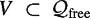
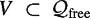

|
| |||||||||||||
|
|
||
This section shows how to effectively combine a sampling-based method primarily designed for multiple-query planning (PRM) with sampling-based tree methods primarily designed for single-query planning (EST, RRT, and others). The Sampling-Based Roadmap of Trees (SRT) planner [14, 43, 353] takes advantage of the local sampling schemes of tree planners to populate a PRM-like roadmap. SRT replaces the local planner of PRM with a single-query sampling-based tree planner enabling it to solve problems that other planners cannot.
A question arises as to whether SRT is a multiple-query or single-query planner. SRT can be seen as a multiple-query planner, since once the roadmap is constructed, SRT can use the roadmap to answer multiple queries. SRT can also be seen as a singlequery planner because for certain very difficult problems, the cost of constructing a roadmap and solving a query by SRT is less than that of any single-query planner solving the same query. This is why in section 7.1 it was pointed out that the distinction of planners to multiple-query and single-query planners is very useful for describing the planners, but always needs to be placed in perspective given the planning problem at hand.
As in the PRM formulation, SRT constructs a roadmap aiming at capturing the connectivity of  . The nodes of the roadmap are not single configurations but trees, as illustrated in figure 7.16. Connections between trees are computed by a bidirectional tree algorithm such as EST or RRT. Recall that a roadmap is an undirected graph G = (V, E) overa finite set of configurations , and each edge (q′, q″) ∊ E represents a local path from q′ to q″. SRT constructs a roadmap of trees. The undirected graph GT = (VT, ET) is an induced subgraph of G which is defined by partitioning G into a set of subgraphs T1, ..., Tn, which are trees, and contracting them into the vertices of GT. In other words, VT ={T1, ..., Tn} and (Ti, Tj) ∊ ET if there exist configurations qi ∊ Ti and qj ∊ Tj such that qi and qj have been connected by a local path.
. The nodes of the roadmap are not single configurations but trees, as illustrated in figure 7.16. Connections between trees are computed by a bidirectional tree algorithm such as EST or RRT. Recall that a roadmap is an undirected graph G = (V, E) overa finite set of configurations , and each edge (q′, q″) ∊ E represents a local path from q′ to q″. SRT constructs a roadmap of trees. The undirected graph GT = (VT, ET) is an induced subgraph of G which is defined by partitioning G into a set of subgraphs T1, ..., Tn, which are trees, and contracting them into the vertices of GT. In other words, VT ={T1, ..., Tn} and (Ti, Tj) ∊ ET if there exist configurations qi ∊ Ti and qj ∊ Tj such that qi and qj have been connected by a local path.
In SRT, the trees of the roadmap GT are computed by sampling their roots uniformly at random in , and then growing the trees using a sampling-based tree planner, such as algorithms 8 and 10. Note that in principle any of the node-sampling strategies of PRM described in section 7.1.3 can be applied.
The roadmap construction is not yet complete since no edges have been computed. An edge between two trees indicates that they are merged into one. For each tree Ti, a set NTi consisting of closest and random tree neighbors is computed and a connection is attempted between Ti and each tree Tj in NTi. As in PRM, SRT may choose to avoid the computation of candidate edges that cannot decrease the number of connected components in GT. In fact, any of the PRM connection strategies of section 7.1.4 can be applied here. In order to determine the closest neighbors, each tree Ti defines a representative configuration qTi which is computed as an aggregate of the configurations in Ti. The distance between two trees Ti and Tj is defined as dist(qTi, qTj). It has been observed experimentally in [14,43] that the consideration of random neighbors offsets some of the problems introduced by the distance function used.
Computation of candidate edges is typically carried out by a sampling-based tree planner. First, for each candidate edge (Ti, Tj), a number of close pairs of configurations of Ti and Tj are quickly checked with a fast deterministic local planner. If a local path is found, no further computation takes place. Otherwise, the sampling-based tree planner used to add trees to the roadmap should be employed. During tree connection, additional configurations are typically added to the trees Ti and Tj. If the connection is successful, the edge (Ti, Tj) is added to ET and the graph components to which Ti and Tj belonged are merged into one. Note that the trees Ti and Tj are connected when some configuration qi ∊ Ti is connected to some configuration qj ∊ Tj.
The pseudocode is given in algorithm 14. In addition to RRT and EST, other sampling-based tree planners, such as [251, 350], can be used with SRT. It is also possible to incorporate lazy evaluation into SRT by using a planner similar to SBL for tree expansion and edge computations.
Input: VT :a set of trees k : number of closest neighbors to examine for each tree r: number of random neighbors to examine for each tree Output: A roadmap GT = (VT, ET) of trees 1: ET ← 2: for all Ti ∊ VT do 3: NTi ← k nearest and r random neighbors of Ti in VT 4: for all Tj ∊ NTi do 5: if Ti and Tj are not in the same connected component of GT then 6: merged ← FALSE 7: Si ← a set of randomly chosen configurations from Ti 8: for all qi ∊ Si and merged = FALSE do 9: qj ← closest configuration in Tj to qi 10: if Δ(qi, qj) then 11: ET ← ET ∪ {(Ti, Tj)} 12: merged ← TRUE 13: end if 14: end for 15: if merged = FALSE and Merge Trees (Ti, Tj) then 16: ET ← ET ∪ {(Ti, Tj)} 17: end if 18: end if 19: end for 20: end for
As in PRM, the construction of the roadmap enables SRT to answer multiple queries efficiently if needed. Given qinit and qgoal, the trees Tinit and Tgoal rooted at qinit and qgoal, respectively, are grown for a small number of iterations and added to the roadmap. Neighbors of Tinit and Tgoal are computed as a union of the k closest and r random trees, as described previously. The tree-connection algorithm alternates between attempts to connect Tinit and Tgoal to each of their respective neighbor trees. A path is found if at any point Tinit and Tgoal lie in the same connected component of the roadmap. In order to determine the sequence of configurations that define a path from qinit to qgoal, it is necessary to find the sequence of trees that define a path from Tinit to Tgoal and then concatenate the local paths between any two consecutive trees. Path smoothing can be applied to the resulting path to improve the quality of the output.
A nice feature of SRT is that it can behave exactly as PRM, RRT, or EST. That is, if the number of configurations in a tree is one, the number of close pairs is one and the number of iterations to run the bi-directional tree planner is zero (denoted by Merge Trees in line (15) of algorithm 14), then SRT behaves as PRM.If the number of trees in the roadmap is zero and the number of close pairs is zero, then SRT behaves as RRT or EST depending on the type of tree. SRT provides a framework where successful sampling schemes can be efficiently combined.
SRT is significantly more decoupled than tree planners such as ESTs and RRTs. Unlike ESTs and RRTs, where the generation of one configuration depends on all previously generated configurations, the trees of SRT can be generated independently of one another. This decoupling allows for an efficient parallelization of SRT [14]. By increasing the power of the local planner and by using trees as nodes of the roadmap, SRT distributes its computation evenly among processors, requires little communication, and can be used to solve very high-dimensional problems and problems that exceed the resources available to the sequential implementation [14]. Adding trees to the roadmap can be parallelized efficiently, since there are no dependencies between the different trees. Adding edges to the roadmap is harder to parallelize efficiently. Since trees can change after an edge computation and since computing an edge requires direct knowledge of both trees, the edge computations cannot be efficiently parallelized without some effort [14]. Furthermore, if any computation pruning according to the sparse roadmaps heuristic is done (see section 7.1.4), this will entail control flow dependencies throughout the computation of the edges.
|
|
||
|